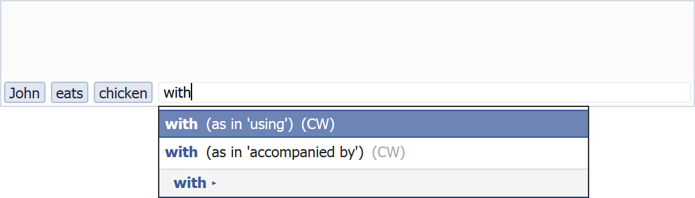
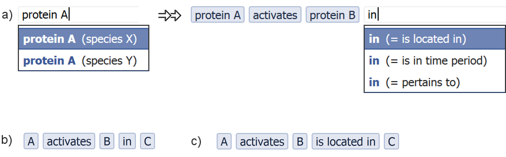
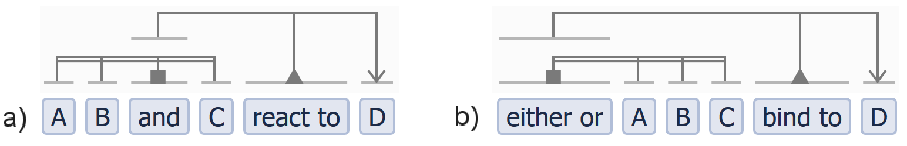

2. VSM (Visual Syntax Method)
Goal (intro summary)
We developed VSM, a method that enables a person to take any ‘unit of information‘,
and easily reformulate it into a ‘computable form’ that clarifies its full meaning and ‘context’.1 Please read the Introduction page if you haven’t yet.
Or at least the Blue Boxes with our key concepts:
‘Piece of Information‘, ‘Context details‘,
‘Computable Information‘.
VSM is a tool that lets people manually create computable information, with both high ease of use, and high expressive power (see also the introduction’s Venn diagram).
We aimed for VSM to be applicable to the widest range of use-cases, i.e.: it works for diverse, heterogeneous information. Simultaneously, VSM keeps any inherent complexity in the captured information manageable for humans, i.e.: we focused on high user-friendliness towards curators.
VSM achieves this by drawing strength from several prominent ways to express or capture information:
controlled languages, natural language, RDF triples, and ontologies.1
• Controlled language: Wiki:Controlled_natural_language,
Wiki:Formal_language;
• Natural language: e.g. English, Dutch;
• RDF: Wiki:RDF, W3C,
tutorial;
• Ontology: Wiki:Ontology_(information_science),
Wiki:Open_Biomedical_Ontologies.
Design
VSM is designed as a procedure in combination with a user interface, for people to build computable information.
As a user-interface (UI), VSM is a component that can be embedded in other software, e.g. a web page, and that enables people to enter (or communicate with the computer) one piece of information.
As a procedure, VSM is like a language. It has a simple, small set of rules for constructing information as a so-called VSM-sentence. This is a linear ‘statement’ form2 This ‘statement’ form is inspired by controlled languages. But unlike them, VSM does not use their complicated rules on word order. Instead, VSM uses a simpler and more powerful way to clarify structure, as we will show. that is flexible, and easy for humans to work with. Just like how natural languages consist of words and a grammar, VSM has two building blocks too: VSM‑terms and VSM-connectors. These can be used over and over, to create infinite combinations.
Notes
- We have built a prototype VSM user-interface, for the purpose of illustration. It is embedded in this site for the interactive examples. We’re also using it at our lab for a first, specific curation project. But a full-fledged, easily reusable web-component for biocuration based on VSM still needs a good programming effort.3 This is now happening in the ‘vsmjs’ organization on GitHub. There we’re building several modules that should culminate in the vsm-box web-component.
- While VSM was designed to solve a problem in the biosciences, we believe that VSM is much more generally applicable. We therefore use many non-biological examples in what follows.
- To get a quick overview, just read the ‘Short Story’ sections below. But please keep critical comments or questions until after you read the detailed Full Stories too!
1. VSM-terms
VSM-terms are like the words of a language. But they are clearer, not ambiguous.
The Short Story 1/5
This is a screenshot of the user interface: an input component called a VSM-box :

When you type a word in it, you get an autocomplete list.
It offers terms from one or more pre-loaded dictionaries, i.e. lists of words for which people already agreed on a precise definition. – This
example just uses a toy-dictionary called Persons:4
To use a VSM-box in a real application, it must be linked to some dictionary/ies, e.g. some of the many available
biological Ontologies
(like on BioPortal)
or Controlled Vocabularies (CV).
Also, these CVs are often incomplete works-in-progress, so you may need to create extra terms, or even new dictionaries, for your research field.
It is an essential step anyway for communicating with colleagues, to agree on what words mean what!
Building an agreed-upon dictionary just formalizes this process and creates a common work of reference.

Then by selecting an item from the list, you enter a VSM-term: …

… and the computer knows exactly which John you talk about, because the blue term is linked to an ID (an identifier, a representative long number) that the computer can use for computation.
To check a term’s definition and ID, you can mouse-hover or tap it:
Next, you can add more VSM-terms. A cool thing is that this works like Facebook search: if you have two friends with the same name, it’s no problem: the autocomplete shows extra information (photo, city) to help you choose the right one. – Likewise, a VSM UI helps you disambiguate between terms from multiple dictionaries. Here we select what kind of ‘chicken’ we mean:

and what kind of ‘with’ we mean:

In the end we create a human-readable sequence of words, with 5 terms that are each linked to an unambiguous ID:

Note: each blue VSM-term is always a specific ‘thing’. So it’s not Johns in general, but a particular John, in a particular situation. This is because we’re capturing information embedded in a context – e.g. the specific observation that some entity behaved in some way in some particular situation / experiment.
Next, we’ll have to clarify to the computer how these 5 terms hang together, i.e. the syntax of the sentence. – But that’s for after the Full Story on VSM-terms, if you like :
(or jump to Short Story 2 →)
The Full Story (formal story)
A VSM-box, the user-interface of VSM,
supports the entering of terms by an autocomplete function,
which displays a selection panel that lets users choose specific terms (Fig 1a).
Each term represents a single concept,2 Wikipedia:Concept or a ‘unit of meaning’. It can consist of one or more words, for instance “homo sapiens”, “is located in”, or “binds to”.
A term is in fact a human-friendly representation for a unique identifier (ID): a number or code that computers work with.
Each term and its linked ID come from one of many lists, such as biological ontologies or controlled vocabularies
(e.g. Gene Ontology), lists of genes (e.g. from NCBI Gene)
or even curator-built lists.3
• http://www.geneontology.org/
• Gene Ontology Consortium: going forward, Nucleic Acids Res, 2015.
• https://www.ncbi.nlm.nih.gov/gene/
In order to embed a VSM-box component into other software,
one must link it to one or more of these term-lists;
this gives the user access to available terminology.
If a same term occurs in multiple lists, then the autocomplete helps the user to disambiguate between the available concepts/IDs.
For example for a mouse and a human gene with the same name, the selection panel would also display the species of each.
Once selected, only the term remains visible to the user while the ID is stored in the background, by the curation system.
The UI can still show full information when mouse-hovering a term,5 The VSM-box UI that we use in the Short Story and other examples, is just a prototype and demo implementation.
In the Full Story sections, we may also discuss possible alternatives or extensions,
which are to be seen as suggestions for future implementation.
or could place a clarifying icon by it.
In addition to supporting the above terms with multiple meanings, or homonyms, a VSM UI should also support synonyms:
multiple terms may be used to represent a same concept.
This enhances user-friendliness in several ways.4 Jointly creating digital abstracts: dealing with synonymy and polysemy, BMC Res Notes, 2012. First, it enables ‘VSM-sentences’ to correspond better to text of the publication that is curated,
because gene and ontology terms often have many synonyms that are frequently used in the biological literature.
When curating, synonyms (linked to the correct ID) may make it easier to mentally map a long VSM-sentence onto terminology used in the publication,
especially for subsequent curators who double-check the VSM-sentence. One could still add a UI-option to display terms by their official name if wished.
Second, some official terms may be excessively long (e.g. in GO5 Gene Ontology (geneontology.org) is a dictionary about gene functionality etc. – Example of a long term:
“positive regulation of transcription from RNA polymerase II promoter“, and there are even longer ones.
Some terms are that long because GO classifies biological concepts in an extensive tree structure of ever-more-specific terminology.
),
and curators may prefer to use an abbreviation to keep produced statements readable.
And third, it enables to make VSM-sentences look more like natural language sentences. For example, consider a single relation concept that has two synonyms:
the verb “is-located-in” and the preposition “in”, so that both represent the same ID. Then the VSM-sentence “A activates B in C” is most natural to read
when one can use the preposition “in” instead of the verb form (Fig 1b vs 1c).
In summary: VSM enables a curator to write and read information with reduced mental clutter; and once specified, each term in a statement represents one specific ID.

Fig 1. Entering VSM terms. (a) A curator enters a sequence of terms, each linked to an identifier that represents a particular ‘concept’. (b) The full sequence of terms. This is just as easily readable as a natural language sentence, among others because the user was able to use the preposition “in” for the relation “is located in”, both of which would here represent the same identifier. (c) This sequence represent the same five IDs but illustrates a less ‘natural’ choice of terms.
Note: in text that follows, we’ll enclose example VSM-sentences and VSM-terms in double quotes, and replace spaces in multi-word terms by dashes, like in this example VSM-sentence: “A is-located-in C”. When we want to accentuate natural language phrases, we’ll use ‘single quotes’.
2. VSM-connectors
VSM-connectors correspond to the grammar or syntax of a language. But they are simpler, yet just about as powerful. There are three main types, yet you can achieve plenty with just the first one:
2.1. Indicating structure with the trident
The Short Story 2/5
Next, how can we make a computer understand the syntax of the above 5-term sentence, like we do?
Simple! You organize terms into ‘triple‘ units. Each triple is a trio of terms that relate to each other as a Subject, Relation, and Object. And you indicate a triple by clicking above the three terms, in said order. By doing so you add a trident connector in the VSM-box, with a distinctly drawn ‘leg’ based on the role you gave to each term.
The first trident / triple is obvious :


Next, we can easily repeat this, once we realize that
the preposition “with” is just the same as a relation, being: “using”. (See: 6
• I like to say that they are different ‘avatars’: i.e. manifestations, appearances, different lexical forms that represents the same thing.
(Much more about that in The Full Story).
• VSM-terms for “with” / “using” / “uses” / … would in fact all have the same ID.
So it makes no difference for a computer’s understanding which form you choose. Still, by choosing the form that we’d expect to see in e.g. English,
we can create VSM-sentences that are much easier to read for humans.
).
Realizing that, we can spot the triple: “the eating (of chicken, by John)“ [=subject]
“happens using” [=relation] “a fork” [=object].
So we add a second trident:


All the terms are connected now. – You can hover over any connector to highlight it. This is useful in longer sentences, to easily see which terms it connects:
Try it yourself! Add those connectors in this interactive VSM-box :
Easy!
Btw, here is a non-example: an imaginary case where a chicken holding a fork is being eaten:
It’s interactive too. So unless the chicken actually has the fork, you may want to correct it : just remove the second trident (hover it and click the top-right ‘x’) and re-add a correct one.
In case you wonder why the (correct) second trident connects not to John, but to eats :
If you would connect it to John, then it would only mean that John is using the fork for something, but not necessarily that he’s eating chicken with it:
then he could e.g. be eating chicken with his hands, and use the fork to hold a tomato! – So
it’s the eating (by John), done by-use-of/with a fork.7
A note to impatient knowledge-representation experts: this intuitive description will become elegantly rigorous during the Full Story sections.
Note #2: The John-holds-tomato case is shown as a VSM-sentence later, on the Examples page.
The only bit of thinking you need to do, is to make sure that you (re)formulate your information as a series of VSM-terms,
in such a way that you can identify triples among them, with VSM-connectors.
And that will be quite easy for more complex cases too. – But that’s for after the Full Story :
(or jump to Short Story 3 →)
The Full Story
Once entered, the sequence of terms may look like disambiguated natural language.
But a sentence is typically not copied verbatim from a paper
(read also 8
In fact, we are able to make it look a lot like natural language,
because we are allowed to make VSM-terms appear as conjugated verbs, nouns, prepositions, etc.
That ensures that we can keep complex information (i.e. longer sentences) easily readable for us, humans, too!
A computer doesn’t understand (and thus doesn’t use/need) conjugations etc.,
so we’ll need to clarify the structure of a sentence in some other (preferably easy!) way.
) :
📖 The First Founding Principle of VSM. A VSM-sentence is a curator’s interpretation, or distillation, of some information’s essence. A curator needs to reflect this ‘understanding’ by entering terms in such a way that a syntax, i.e. a structure of how VSM-terms link together to create a composed meaning, can be specified with VSM‘s ‘syntax connectors’ or VSM-connectors. These VSM-connectors are added with the user interface, and they are available in three main types: the trident, the list-connector, and the co-reference.
In what follows, we explain how VSM-connectors are used to syntactically specify anything from simple statements, to statements with complex hierarchical structures that convey rich contextual information.
We start with the trident. A curator adds structure to a statement by identifying ‘triples’ in it, or subunits of three terms.
These triples look similar to RDF-triples initially.6
• RDF in general: Wiki:RDF, W3C,
tutorial.
• E.g. triples represented in RDF Turtle.
The UI enables a user to specify triples by linking terms with a ‘trident’ connector.
A trident is added via three consecutive clicks, one above each term according to the role it has in the triple, in the order of: subject, relation, and direct object.
The corresponding parts of the trident, its prongs or ‘legs’, are: a simple line, a line decorated with a filled triangle, and an arrow, respectively.
Fig 2a shows an example of a one-triple statement specified with a trident, which expresses that a “John” “eats” a “chicken”.

Fig 2. Identifying triples with tridents. (a-b) The user adds VSM trident connectors that indicate triplets among the terms and define the intended syntax. The resulting composite semantics is explained in the main text. (b-d) show how meaning changes when attaching the second connector’s subject leg to a different term.
Next we will show by example how to use multiple tridents, after which we can explain more founding principles. Fig 2b shows the addition of more terms and context to the first statement, via a second trident. This specifies a second triple subunit that says: this “eating” happens “with” (or “using”), a “fork”. We represented this second triple’s relation by a preposition-type synonym, for natural-language-like readability. As contrast, Fig 2c shows an alternative version in which a chicken is using a fork instead. This illustrates that attaching a connector leg to a different term fundamentally changes the meaning. Similarly, Fig 2d states that John uses a fork, although it does not say that he eats chicken with it (he could be eating chicken in his hand, while using the fork for another purpose). Only by connecting the second trident to the “eating” term does one capture the correct meaning: ‘the eating, by John, is by use of a fork’.
As shown, the significance of which specific element a VSM connector leg links to is huge. This is further elaborated in:
📖 The Second Founding Principle of VSM.
A connector leg always attaches to one particular term,
and never to an entire other triple. This is even true when a leg attaches to a term that is used as a relation in another triple;
and this makes VSM different from RDF.9 In RDF you need to make a ‘reification’ construct in order to point to a relation.
I.e. you need to create an additional ‘object’ that represents that ‘relation’
(or in fact, its entire embedding triple), and that you can then point to.
Because RDF treats ‘relations’ as fundamentally different things than ‘objects’. This difference is intentional, and it makes the syntax-definition process simple, flexible, scalable, and intuitive, following the thinking of the curator.
It is rooted in VSM‘s specific approach to treat all terms equally: both so-called entities and relations are first-class citizens.
In VSM, any term is only viewed as a relation versus an entity, in the context of a particular trident that connects to it.
Because of that, any term that functions as a relation under one trident can function as a subject or object (i.e. an entity)
when viewed under another connecting trident.
Therefore, for instance in Fig 1b, the verb term “activates” can equally be thought of as a noun: ‘activation’.
(And in Fig 2b, the verb term “eats” is in meaning identical to its noun-form ‘the eating’).
If both lexical alternatives would be available as terms in a dictionary for VSM, then they would carry the same ID. – In
conclusion: each VSM-term should generally be thought of as an ‘entity’.
(See also this note: 10 This Principle is crucial, so let’s repeat it in other words:
Only when some trident attaches to a VSM-term with its relation-leg, only then is the term made to be seen as a relation.
And then only so, under that one trident, i.e. in that one triple, locally.
So anything that e.g. RDF views as a relation, VSM views only locally as a relation (under a particular connector)
and views it elsewhere as an entity / as ‘reified’ / ‘as a noun’.
(The RDF phrase “re-ified” comes from Latin, meaning ~‘thing-ified’ or ‘made into an object’).
This was a super-essential and necessary step for designing VSM‘s expressivity and simplicity in what will follow:
think of all VSM-terms as nouns / ‘thingified concepts’ / something that you can mentally point to.
<– Really, read it).
2.2. Scaling up to more complex information
The Short Story : Just keep adding tridents 3/5
1) Mechanism
Here is a biological example. It says: ‘some molecule A activates a molecule B in a location C’ :

Hereby “in” represents the same ID as “is-located-in”, but it’s easier to read like that in a sentence.
The two tridents express, resp.:
- “A activates B”, and
- “the-activation-of-B-by-A is-located-in C”.
Did you see what happened here? : The first trident turned “activates” into a more specific term “the activation of B by A” (i.e. it is ‘placed in the context of A and B ‘). And that enabled the second trident to connect to that particular’ized concept, and specify it further: “that-A-B-activation is-located-in C”.
Now, this ‘context sharing’ happens for all connected terms. For example the first term now represents ‘the A that activates B, in C’,
and the last term ‘the C in which…’, etc.
So every time you add a connector, each of the connected terms receives extra context from all others.11 Some more ways to say this:
‘each term is placed in the context of / accumulates extra context-meaning from all others’, or:
‘all connected VSM-terms enrich each other’s meaning’.
This context meaning is shared with indirectly connected VSM-terms too.
In the example, even the term “in” now specifically represents ‘the being located in C of the A-B-activation’.
This is really useful. Because then you can say more about that concept again.
For example: ‘that being-located in…’ is only “probable”. Then we can form the sentence: “A activates B probably in C”.
(To add adverbs, see next Short Story).
And that turns each VSM-term into a specific thing that you can refer to again, with a new connector, to add more and more context.
2) Teaser
Let’s extend the above sentence. Let’s add an extra context detail, saying that our “A” is also ‘bound to a molecule D’. In a VSM-box we can enter two more terms at the end, drag them in place for human readability, and connect them to “A”:


That last step shows that new connectors get auto-sorted for visual comfort, after you add them on top.
Now, using the same principle, we can keep adding nested context with VSM, just like we can in natural language.
3) Showcase
So let’s build an example from a real scientific paper.7 Dai 2007: ‘A WUSCHEL-LIKE HOMEOBOX Gene Represses a YABBY Gene Expression Required for Rice Leaf Development’. We will spell out each added trident:
- “leaf lamina” (the blade of a leaf, a term provided by the Plant Ontology8
The term “leaf lamina” represents the Plant Ontology ID ‘PO:0020039′.
You can check this ID, term, synonyms and a precise definition on this page. )
was observed to be “twisted” (a term linked to a PATO ID9 The term “twisted” represents the Phenotype And Trait Ontology ID ‘PATO:0001989′. You can check this ID, term, synonyms and a precise definition on this page.
Note that “sinuous” has been assigned as this ID’s preferred (synonymous) term, since we made this example. But the VSM-term’s ID and associated meaning remain the same, of course. ) :
- and this “being twisted, of leaf-lamina” “is in” (here means: “pertains to”) “Oryza” (a rice plant):

- and this was rice that is underexpressing (i.e. a type of gene modification) some gene :

- and this underexpression was done using RNA-interference (a gene modification technique) :

And we got an easy to read sentence, an intuitive structure, and a clear, computable piece of information! – So
VSM enables us to easily build complex statements, by reusing the same building blocks.12Easy to read: relative to the complexity of the information. – And of course (just like natural language) relative to the reader’s knowledge of the research field.
To quote one of our curators:
“From a user’s side, I don’t think that complexity is difficult to handle at all.
In fact, I’m excited about all the complexity we can now handle in such an elegant manner.
It allows us to focus on the biology; no more need to worry about the entry format so much.”
Notes: 1) This is not a sentence copied verbatim from text. It is reformulated information, boiled down to its essence by writing it with VSM. – 2) The connectors are manually added.13 There was once this guy at a conference who mistakenly thought that the connectors were a ‘parse-tree‘ (as in: generated by a text-mining algorithm). Because they look a bit like it. – He later admitted he had been answering an email during my presentation, though. (I thank him for immunizing us against one more possible misunderstanding though). Though it should be possible to create computer-assistance.
(you could jump to Short Story 4 →)
The Full Story
📖 The Third Founding Principle of VSM.
In order to scale this method up to statements with many more terms, one should keep in mind another key insight:
by adding a trident, each of its three connected terms receives extra ‘context’ or meaning from the other two terms.
In other words: each term is placed the context of its connected terms, and becomes more specific.
For example in Fig 2a, the first trident makes “eats” become ‘the eating, of a chicken, by John’;
likewise “chicken” becomes ‘the chicken eaten by John’; and also “John” becomes a more specific concept.
Then, when one connects a second trident to any of these terms, one in fact refers to that term’s full, context-enriched meaning.
So the second trident in Fig 2b states: “the-eating-of-chicken-by-John happens-with fork”.
And by induction, all five of its terms now carry an enriched meaning, accumulated from the other four.
This makes each term individually referable again, in the same way. Like this one can keep adding further or nested context to every single term, recursively.
For instance to express ‘John eats a chicken, occasionally using a fork’, one would connect a new trident to “using”, and create a new triple that states:
‘the use of fork (for eating of chicken by John), happens occasionally’. (See also Bidents below for how to intuitively add adverbs).
– (More on ‘context’: 14
In more technical terms,
‘adding more context‘ means:
‘further narrowing down the meaning of a concept,
as to what range of possible meanings it may represent‘
(making it more precise), or
‘removing some ambiguities’, or
‘further eliminating unknowns’.
E.g. in just “John eats chicken”, “eats” could happen in any way.
But after we add the “eats with fork” trident, we narrow down “eats”‘s meaning
by anchoring down (at least one aspect of) how it happens.
(Note that there are always remaining unknown aspects that one could
further specify about it, but that would lead us to
Principle 4 on a further page already).
).
Fig 3a-c show longer VSM-sentences created in this way, representing information curated from actual scientific publications. For example in Fig 3a, the second leftmost trident expresses that “the-being-twisted-of-leaf-lamina pertains-to Oryza-that-underexpresses-YAB3-by-RNA-interference”. Note that here, the term “in” will have been linked by the curator to the concept “pertaining-to” rather than “is-located-in”. Each term represents an identifier from a controlled vocabulary, e.g. “leaf lamina” is provided by PO (Plant Ontology) and “twisted” by PATO (Phenotype And Trait Ontology). We want to accentuate that any additional biological context, like the details captured here, helps to increase the quality of the information. This could for instance resolve two seemingly contradictory ‘bare triple’ statements through reconciliatory contextual details.15 E.g. both triple statements “cat is alive” and “cat is dead” can be true. But they are true in their own specific context. We can make this context explicit by expanding the statements to e.g. “cat is alive in 2018″ and “cat is dead in 2088″.
The order in which connectors are added or displayed is irrelevant for the connection structure. Still, some ordering may look more intuitive than others, for example based on which subunit one thinks of as central in the statement (see ‘Head’ later). Various visual sort algorithms may be developed for this UI aspect.
Note that although this all can be mapped to RDF10 See this Wikipedia page, or the Resource Description Framework project site. , either directly when two non-relation legs connect to a term, or via RDF-reification when a non-relation leg attaches to a term also used as a relation, such RDF graph renditions quickly become unintelligible to a curator (see later on the Discussion page for a full example).

Fig 3. VSM-sentences based on scientific papers. The VSM-sentences are structured, reformulated versions of information from Life Science publications: (a-b) from11 Dai 2007: ‘A WUSCHEL-LIKE HOMEOBOX Gene Represses a YABBY Gene Expression Required for Rice Leaf Development’. , (c) from12 Jiang 1999: ‘Multistep regulation of DNA replication by Cdk phosphorylation of HsCdc6′. . Some of their terms come from ontologies, some others are yet to be added to official controlled vocabularies, especially relation terms.
2.3. A variation on the trident: bidents
The Short Story 4/5
A phrase like ‘white mouse’ is not a triplet of terms. So how do we write this with VSM?
Simple. Just read the phrase silently as: it’s a “mouse [being] white”.
Meanwhile you add a trident, from “mouse” as a subject, to “white” as an object,
but you skip the implicit relation‘s leg: just click twice over “white”.16
You could also read it as
“mouse [specified-to-be] white”, or as
“mouse [has-color] white”.
And the computer would understand it like that too, because it should already know that “white” is a color,
and so it could infer the more specific “[has‑color]” if needed.
The connector now has only two legs, so we call it a bident :

Such ‘attribute’ connections keep VSM-sentences easy to read and write. And that is a main goal in VSM‘s design. Still, the Full Story discusses some limitations to ensure computer-understanding.
This 1-minute VSM-box demo Youtube video illustrates what we’ve learned so far.
From here on we’ll explain the rest of VSM as Full Stories, mainly. A preview:
- any of a trident’s legs can be skipped, creating bidents for e.g. “X explodes” or “activation [of] B”;
- there is a list connector, to capture e.g. “A, B, and C”, or “either A, B, or C”;
- there is a coreference connector, the third and final connector you’d need for complex cases.
(you could skip past all that, and jump to Short Story 5 →)
The Full Story
Some information may feel unnatural to express with triples. For instance, some verbs have no object, as in “plant blooms”. Although this can be captured with a triple like “plant belongs-to class-of-blooming-things”, the task of stretching and reformulating such information to fit a triple structure is a burden that should not be imposed on the curator. VSM is focused on usability for the curator, and therefore the VSM UI supports tridents where one leg can be left away: bidents. In the example above, no object needs to be defined and the object leg is left out (Fig 4a). A user could add this first type of bident just like a trident, but with the third mouse click outside the VSM component.
Bidents also make the UI more consistent. For instance, compare the statements “X stimulates: A activates B”, and “X stimulates activation-of B”,
where the latter uses a second type of bident, one that omits the subject leg (Fig 4b-c).
Apart from using the appropriate synonym for the “activation” relation (with same ID),
the principal difference is that the activator is unspecified in the latter case. Appropiately, the structure of both statements is similar, thanks to the bident.
This consistency would not be present when using a second triple “activation having-activatee B” with an artificial relation inserted.17 Note for experts:
One could also enter “activation of B”, by using an explicit VSM-term “of“, which would have the meta-meaning
‘has object’.
Note #2: please do not misunderstand and think that ‘VSM knows’ if two sentences (two graph structures) would represent a same, rephrased meaning.
VSM does not ‘know’. VSM is just a representation form,
to be used by people and algorithms. – Just
like ‘English does not know’ what you mean. Your brain does, and it uses English to represent information at some level.
A third type of bident omits the relation leg. Again this helps usability for the curator, in this case by allowing statements to better reflect a basic structure also used in natural language: attributes. Attributes include adjectives, adverbs, and numbers. For example, a statement about a ‘white mouse’ would require a “mouse having-color white” when using only the triple structure. However, if the term “white” is already classified as ‘a color’ in its vocabulary or ontology, then making curators explicitly insert the relation “having-color” would be a waste of effort, since it can be inferred automatically. Then a bident structure can be used, as in Fig 4d-e.
• In general, any category of terms that can be used as attributes can be associated with
its own default, implicit attribute relation. For example: numbers (“.. [has-count] 5″), measures (“.. [has-size] big”),
or posttranslational modifications (“.. [has-state] phosphorylated”); see also Fig 4f-g.
• In other cases, it could be associated with the attribute’s target concept as well.
For example: “<gene‑x> expression” would mean “expression [of] <gene‑x>”, e.g. “Cas9 expression”.
Or “<tree‑x> leaf” would mean “leaf [from-tree-of-species] <tree‑x>”, e.g. “oak leaf”.
• However, for attribute constructions in natural language that use an implicit relation that is not yet automatically inferable,
one must use either an explicit triple or a single term.
For example, ‘actin filament’ should then be represented as “filament composed-of actin” or as “actin-filament”.

Fig 4. Bidents.
The user can add a trident that misses any one of its three legs, i.e. a bident, for ease of use as explained in the main text.
The bident in (a) accomodates a verb without object. The bident in (c) represents “activation-of B” with an unknown subject,
which is structurally similar to case (b) where a subject “A” is known.
The bident in (d) frees the curator from the obligation to explicitly define a relation that could be computationally inferred, as in (e).
(f-g) show other attributes with an implicit, inferable relation: “has-precision”, “has-count”, and “has-concentration”.18
Here we also see that numbers can be represented with VSM-terms.
This makes sense because one “5” can be conceptually different from another “5”;
because just like other VSM-terms, a number‑concept can be embedded in a particular context.
For example, one could be an “approximately 5”, another a “5 ± 2”, and another an “at-least 5”.
So the autocomplete UI needs to support the entry of numbers, by immediately creating a new VSM-term for any of them as needed,
after the user presses Enter.
(This was not yet implemented in the prototype used on these web pages,
but it is implemented now in the vsm-dictionary module:
see its spec).
2.4. Group types that combine items : the list‑connector
Consider a statement like ‘A, B, and C react to D’. In order to build this with triples only, as in RDF, one could first make an “A and B”, then connect their “and” to “and C”, and then connect this second “and” to “react-to D”. However, it may be unknown in which order reactants combine. Then this construct with triples is artificial, as it may suggest that A and B combine first and then together combine with C. In addition, the longer a list, the more burdensome all the artificial triples become to the curator.
With VSM‘s list-connector, one can express that any number of list-item terms all come together as one group, in a way specified by a list-relation term. E.g. Fig 5a states that reactants all together react to D, as an unspecified group. The fact that the group order is unspecified, would be embedded in the meaning/ID of the chosen list-relation “and” (or: “and-(as-unordered-set)”). The curator is free to choose other list-relations as well: for instance a term “and-(as-ordered-list)”; or “sum‑of”; or “either‑or”, which is used in Fig 5b to state that ‘either A, B, or C bind to D’. This term “either-or” is also an example of an idiosyncratic phrase in natural language, that must be captured with a single term in VSM.
The examples also illustrate this: the specific concept that represents a group of all items combined in the way defined by the list-relation, is now embedded in this list-relation term. Just like how tridents function, the list-connectors in Fig 5a-b turn their list-relation term into a specific: “the-A-B-C-group”, and (for lack of a less artificial way of phrasing) “the-eitherOr-union-of-A-B-C”, respectively. Then once again, another connector can link to this term as it represents the specific, whole group.

Fig 5. List-connectors. (a) A list-connector assigns a list-relation, here “and”, which groups a number of list-elements. Here, the list-relation “and” now represents the combination of the list-elements ‘as a whole’, and as such can represent the left side of a reaction. (b) Other terms can be used as a list-relation. Here, the list-connector makes the VSM-term “either-or” represent the phrase ‘either A, B, or C’.
In Fig 5 we propose a UI that distinguishes list-connectors by drawing them with a double ‘backbone’, a leg ending in a filled square that connects to the list-relation, and undecorated legs that connect to list-items. The UI should enable the user to switch from tridents to list-connectors, for instance by holding the Shift button down while first clicking above the list-relation, and next above all list-items. If order is important for the list-relation, then not click-order, but the order of terms in the VSM-sentence counts.
2.5. Referring or further specifying: the co‑reference
The coreference connector provides additional flexibility to handle advanced use cases. Its most basic function is to let users build human-readable sentences with terms that refer back to another term; for instance with a term “it”, as in Fig 6a. We call this “it” the child term. The child term is a placeholder that receives meaning from its parent term: the term it refers to. In Fig 6, the UI draws the coreference connector in dashed lines, with an undecorated leg connecting to the child, and an open triangle arrow connecting to the parent; and the child term is surrounded with dashes. A user could add a coreference by first Ctrl+clicking above the child term, and next above the parent term.
The usefulness of the reference connector goes further: it also enables a curator to work with two distinct concepts. Consider e.g. “Bob activates device in evening causes it beeps in morning” (Fig 6b). The meaning embedded into the parent concept “device” is that it is activated by someone, but should not be that it is beeping yet. Therefore we should not connect “device” directly to “beeps” with a trident. Instead, a child concept is used, which inherits this context of having been activated in the evening, and in addition receives the extra context of “beeping in morning” from its own connection environment. These two concepts can then be separately enriched with more context, or referred to later on, e.g. “Jane charges it (#1)” and “Bob silences it (#2)”. A biological example could involve a molecule being tagged in one context, e.g. cell cycle phase or location, which causes it to form a bond in a next context.

Fig 6. The co-reference connector. (a-b) The coreference connector has two functions, as explained in the main text. First, it allows to build a VSM-sentence that is natural to read. Second, it enables one to work with two distinct concepts, each at a different stage of specification: in (b) the first “device” is not yet beeping, while the second occurrence of the device, represented by the ‘child term’ “it”, is beeping. A curator could still add further specifics about the device, in both of its states.
The two distinct concepts are not just about past versus present, but about how much context is present in each part of the discourse. Hereby it is helpful to think of this connector as a unidirectional ‘wind arrow’ that points to where context is ‘flowing from’, as in ‘inherited from’. This notion is crucial to understand the following issue: the case where connector attachments are non-interchangeable:
2.6. Non-interchangeable connections (advanced topic (but fun))
When we connect multiple tridents or bidents to a term, we use one assumption: that the order of connecting them does not matter. This is usually true. In natural language one can test this by observing that the meaning of some statement does not change when switching attribute positions; e.g. ‘big white mouse’ has the same meaning as ‘white big mouse’. Also in VSM, each new connection simply adds context in an interchangeable way: in Fig 7a, “mouse” is both “big” and “white” at the same time.
However, in some cases order does matter, as e.g. in the statement “half-of black dogs”. By connecting “half-of” and “black” to “dogs”, one can construct three different meanings (see the sets in Fig 7b-d):
- ‘some half of the dogs, that happen to be black’: here “dogs” is limited to “half-of” and “black” at the same time (while still being half-of in total);
- ‘some half of: black ones of the dogs’;
- ‘black ones of: some half of the dogs’.
In case 1, the attributes are ‘applied’ simultaneously, while in cases 2 and 3 they are applied in one of the two possible orders.
What happens when order matters, conceptually, is that we first compose an idea, and then we isolate it and refer to it, without letting the further added context mix in with it. This is in fact exactly how also the coreference connector works: in e.g. case 2 in Fig 7c one can first construct a parent concept (“black dogs”), and then create a placeholder child concept (e.g. labeled “them”), which points with a coreference connector to the parent. This isolates the parent’s meaning and transfers it onto the child, unidirectionally. Finally, one can use this child term “them” for building the rest of the VSM-sentence, e.g. by connecting it to “half-of” and “escape”. The coreference connector points from the further-enriched child to its isolated, meaning-providing parent.
Note that case 3 (Fig 7d) is useful when one needs to further specify the isolated part, as in ‘black ones of: some female half-of dogs’.
Also note that in natural language the phrase ‘the black half of dogs escapes’ not only expresses the information in case 1 (Fig 7b), but also that “half-of dogs has-color black” which would require a second VSM-sentence.
Fig 7. Interchangeable vs. non-interchangeable attributes. In (a), attribute order does not matter. But in advanced cases, the order in which multiple connections are added to a term can affect meaning. Here, the attributes “half-of” and “black” can be applied either (b) simultaneously, or (c-d) in a particular order. In the latter cases, one applies the first connection to the term, then isolates the term as parent for a coreferencing child placeholder, e.g. labeled ‘them’, and then further connects this child.
3. Additional functionality
While terms and connectors provide the core functionality of VSM, some additional features can further raise both the usability and expressivity of VSM. We built some of these functions into our research-prototype UI already, while some others are still development ideas, or ideas in development.
3.1. Templates
The Short Story 5/5
How can we make VSM immediately support the way how people are working today? Because people often search through scientific literature for one type of information (initially at least), and then enter it repetitively into a spreadsheet or database form.
Just like you’d expect: with VSM-templates: these are partial, pre-constructed VSM-sentences:

… with empty fields where a VSM-term can be filled in:


VSM-templates imitate spreadsheet rows or entry forms. But in addition they offer a convenient autocomplete
(which is quicker and less error-prone that spreadsheets),
with each field linked to its own, particular set of term dictionaries.19Each dictionary (or Controlled Vocabulary, CV) is a list of terms or words, with an agreed-upon meaning and definition, within a particular topic.
Note for experts: In our prototype UI, we can specify a number of “preferred CV s” for each empty field.
Terms from those CVs are then conveniently ranked on top of the autocomplete suggestion list. – Alternatively,
one may want to configure the template-UI to leave less flexibility,
and to require that users enter terms only from a specific CV. And they offer an intuitive clarity of what to fill in where, because of the readable ‘sentence’ format.
Our test-users literally loved all this.20 Isn’t it funny that ‘literally’ has become a figuratively used expression? — But really,
our test-users would be horrified if they had to go back to the technology they used before VSM-templates.
They described this new curation technology – VSM – and
what could be done automatically for them as a result,
as being a real time‑saver, and even as ‘Magic!’.
What you may not expect (compared to current technology), is that VSM-templates are still extensible!
Just like for any other VSM-sentence, you can always add extra context details: just add or insert new terms and connect them up:


Boom!
Now we have a curation technology that works just like what exists, but is better at the same time (with term lookup),
and that is immediately extensible to its full power!
So VSM is: easy to use, extremely flexible, and ready to be computed upon! Exactly what we wanted.
(you could jump to the Summary → or the Examples → or the Discussion → page)
The Full Story
While VSM enables flexible information capture, some curation tasks involve the repetitive entry of similarly structured facts. To streamline a routine entry of facts, one can envision a VSM-template. This is a predefined structure of connectors, with a series of terms, and empty fields that need to be filled in with a term by the user. Fig 8 shows a template, and the process of filling in terms. Each empty field can be associated with one or more preferred dictionaries, e.g. genes or cell types. This can help an autocomplete function to either rank these terms accessibly on top, or limit entry to these terms only. Curators need not be restricted to capture only what a template was designed for: they can still add extra terms anywhere into the VSM-sentence and connect them up. For broader curation tasks, software could provide a number of VSM-templates in a menu, each dedicated to a particular information type that the curator may want to capture from a paper; it could even enable users to design new templates.
A VSM-template may need to capture so many details that it grows beyond a normal screen width. When it is a long template that covers many infrequently used details, the UI could be made user-friendlier. It could let the user start from a small template and then extend it with extra structures where necessary: by replacing certain terms or empty fields with more detailed template VSM-phrases. For example, a field for a protein term could be augmented with a VSM-structure to hold phosphorylation details; or it could be replaced by a list of proteins that act together; or a simple location field could be changed into a VSM-structure that includes cell type, tissue, species, developmental stage etc.

Fig 8. VSM-templates. In the VSM-template in (a), the first two empty fields would be associated with protein terms, and the third field with cell types and cell lines. (b) is an example of this template filled in. (c) shows a template where the relation is easily selectable, and where the last empty field would be linked to a controlled vocabulary of experiment types.
3.2. External coreference
In natural language, one can build a story by referring back to any concept that was conveyed in an earlier sentence (e.g. ‘John buys cheese’; ‘One hour after that, mouse eats it‘). Because each term in a VSM-sentence is a specific concept, one could refer back to any of them, similarly, from other VSM-sentences. Software for managing multiple VSM-sentences could support such coreferencing between sentences, visually or through internal IDs. This could for instance be used for unambiguously defining the steps of biological experiment protocols.
3.3. Head
As explained earlier, each term receives extra ‘context’ from all its connected terms. As a consequence, every term actually represents the entire content of the VSM-sentence, although from its own ‘perspective’: e.g. in Fig 2b the fifth term can be read as ‘the fork used for eating of chicken by John’. In natural language though, a sentence conveys information only from one particular perspective, e.g. in Fig 2b, the sentence implies focus on ‘the eating’. This perspective or ‘intended meaning’ is embedded in the term “eats”; and this term is also the one that subsequent sentences would refer to when stating e.g. “that was observed in 2018″. The VSM UI could enable a user to assign this focal term or head in a VSM-sentence.
Next, when one wants to refer to a sentence as a whole, e.g. for adding meta-information, software could automatically make an external coreference toward this intended term.
Moreover, in template VSM-phrases, one simply must assign a head because the UI would need to know by which ‘focal term’ it should insert the phrase in a full template. For instance, in order to replace a template’s empty field “<protein>” by inserting the phrase “<protein> having-state <state>”, this VSM-phrase’s first term must be assigned as the head. A UI could support head assignment via an Alt+click above a VSM-term, and by drawing dashes above the term and under the connectors.
3.4. General and Data terms
As VSM terms are embedded into a particular context, they represent specific concepts. Ontologies, however, define relations between general concepts, i.e. concepts that are not bound to a particular context. In addition, RDF is able to work with literal text-strings or data, which do not represent any ‘concept’. In order to support all these three fundamentally different types, the VSM UI could let the user change a term’s type between specific, general, or data; and it could show them with a different background color. Then a VSM-sentence could express information like “duck (in general) is-a-type-of bird (in general) according-to ontology-version-X (specific)”, or “bird (in general) has 2 wings”, or “chicken (in general) has-alias hen (literal string)”, or “proteinX has-sequence MRHIAHTQ (literal, data)”.
In fact, the distinction between general and specific concepts is described in 📖 The Fourth Founding Principle of VSM, but we can explain that much better after we show a picture of VSMGraphs, later on the VSMGraphs page.
Note that in case one would use VSM as an interface to generate RDF or OWL models, VSM does not impose the use of either their OWL Instances or OWL Classes. In the VSM view, the only difference between (VSM‘s) specific and general is whether a concept is thought of as being attached to any explicit or implicit context, or not, respectively. Still, it makes sense to translate (the default, specific) VSM-terms to OWL Instances, as bioscience findings are typically reported only under particular experimental conditions or biological context.
This concludes the presentation of VSM‘s core elements, theoretical basis, and extended functionality.
An overview of VSM is on the Summary page
Many interactive examples are on the Examples page
More about VSM‘s implications and roll-out, is on the Discussion page
or go back to the Introduction
- 1 Please read the Introduction page if you haven’t yet.
Or at least the Blue Boxes with our key concepts: ‘Piece of Information‘, ‘Context details‘, ‘Computable Information‘. - 2 This ‘statement’ form is inspired by controlled languages. But unlike them, VSM does not use their complicated rules on word order. Instead, VSM uses a simpler and more powerful way to clarify structure, as we will show.
- 3 This is now happening in the ‘vsmjs’ organization on GitHub. There we’re building several modules that should culminate in the vsm-box web-component.
- 4
To use a VSM-box in a real application, it must be linked to some dictionary/ies, e.g. some of the many available
biological Ontologies
(like on BioPortal)
or Controlled Vocabularies (CV).
Also, these CVs are often incomplete works-in-progress, so you may need to create extra terms, or even new dictionaries, for your research field.
It is an essential step anyway for communicating with colleagues, to agree on what words mean what! Building an agreed-upon dictionary just formalizes this process and creates a common work of reference. - 5 The VSM-box UI that we use in the Short Story and other examples, is just a prototype and demo implementation.
In the Full Story sections, we may also discuss possible alternatives or extensions, which are to be seen as suggestions for future implementation. - 6
• I like to say that they are different ‘avatars’: i.e. manifestations, appearances, different lexical forms that represents the same thing.
(Much more about that in The Full Story).
• VSM-terms for “with” / “using” / “uses” / … would in fact all have the same ID.
So it makes no difference for a computer’s understanding which form you choose. Still, by choosing the form that we’d expect to see in e.g. English, we can create VSM-sentences that are much easier to read for humans. - 7
A note to impatient knowledge-representation experts: this intuitive description will become elegantly rigorous during the Full Story sections.
Note #2: The John-holds-tomato case is shown as a VSM-sentence later, on the Examples page. - 8
In fact, we are able to make it look a lot like natural language,
because we are allowed to make VSM-terms appear as conjugated verbs, nouns, prepositions, etc.
That ensures that we can keep complex information (i.e. longer sentences) easily readable for us, humans, too!
A computer doesn’t understand (and thus doesn’t use/need) conjugations etc., so we’ll need to clarify the structure of a sentence in some other (preferably easy!) way. - 9 In RDF you need to make a ‘reification’ construct in order to point to a relation.
I.e. you need to create an additional ‘object’ that represents that ‘relation’
(or in fact, its entire embedding triple), and that you can then point to.
Because RDF treats ‘relations’ as fundamentally different things than ‘objects’. - 10 This Principle is crucial, so let’s repeat it in other words:
Only when some trident attaches to a VSM-term with its relation-leg, only then is the term made to be seen as a relation. And then only so, under that one trident, i.e. in that one triple, locally.
So anything that e.g. RDF views as a relation, VSM views only locally as a relation (under a particular connector) and views it elsewhere as an entity / as ‘reified’ / ‘as a noun’.
(The RDF phrase “re-ified” comes from Latin, meaning ~‘thing-ified’ or ‘made into an object’).
This was a super-essential and necessary step for designing VSM‘s expressivity and simplicity in what will follow: think of all VSM-terms as nouns / ‘thingified concepts’ / something that you can mentally point to. - 11 Some more ways to say this:
‘each term is placed in the context of / accumulates extra context-meaning from all others’, or:
‘all connected VSM-terms enrich each other’s meaning’.
This context meaning is shared with indirectly connected VSM-terms too.
In the example, even the term “in” now specifically represents ‘the being located in C of the A-B-activation’. This is really useful. Because then you can say more about that concept again. For example: ‘that being-located in…’ is only “probable”. Then we can form the sentence: “A activates B probably in C”. (To add adverbs, see next Short Story). - 12Easy to read: relative to the complexity of the information. – And of course (just like natural language) relative to the reader’s knowledge of the research field.
To quote one of our curators:
“From a user’s side, I don’t think that complexity is difficult to handle at all.
In fact, I’m excited about all the complexity we can now handle in such an elegant manner.
It allows us to focus on the biology; no more need to worry about the entry format so much.” - 13 There was once this guy at a conference who mistakenly thought that the connectors were a ‘parse-tree‘ (as in: generated by a text-mining algorithm). Because they look a bit like it. – He later admitted he had been answering an email during my presentation, though. (I thank him for immunizing us against one more possible misunderstanding though).
- 14
In more technical terms,
‘adding more context‘ means:
‘further narrowing down the meaning of a concept,
as to what range of possible meanings it may represent‘
(making it more precise), or
‘removing some ambiguities’, or
‘further eliminating unknowns’.
E.g. in just “John eats chicken”, “eats” could happen in any way. But after we add the “eats with fork” trident, we narrow down “eats”‘s meaning by anchoring down (at least one aspect of) how it happens.
(Note that there are always remaining unknown aspects that one could further specify about it, but that would lead us to Principle 4 on a further page already). - 15 E.g. both triple statements “cat is alive” and “cat is dead” can be true. But they are true in their own specific context. We can make this context explicit by expanding the statements to e.g. “cat is alive in 2018″ and “cat is dead in 2088″.
- 16
You could also read it as
“mouse [specified-to-be] white”, or as
“mouse [has-color] white”.
And the computer would understand it like that too, because it should already know that “white” is a color, and so it could infer the more specific “[has‑color]” if needed. - 17 Note for experts:
One could also enter “activation of B”, by using an explicit VSM-term “of“, which would have the meta-meaning ‘has object’.
Note #2: please do not misunderstand and think that ‘VSM knows’ if two sentences (two graph structures) would represent a same, rephrased meaning. VSM does not ‘know’. VSM is just a representation form, to be used by people and algorithms. – Just like ‘English does not know’ what you mean. Your brain does, and it uses English to represent information at some level. - 18
Here we also see that numbers can be represented with VSM-terms.
This makes sense because one “5” can be conceptually different from another “5”;
because just like other VSM-terms, a number‑concept can be embedded in a particular context.
For example, one could be an “approximately 5”, another a “5 ± 2”, and another an “at-least 5”.
So the autocomplete UI needs to support the entry of numbers, by immediately creating a new VSM-term for any of them as needed, after the user presses Enter.
(This was not yet implemented in the prototype used on these web pages, but it is implemented now in the vsm-dictionary module: see its spec). - 19Each dictionary (or Controlled Vocabulary, CV) is a list of terms or words, with an agreed-upon meaning and definition, within a particular topic.
Note for experts: In our prototype UI, we can specify a number of “preferred CV s” for each empty field. Terms from those CVs are then conveniently ranked on top of the autocomplete suggestion list. – Alternatively, one may want to configure the template-UI to leave less flexibility, and to require that users enter terms only from a specific CV. - 20 Isn’t it funny that ‘literally’ has become a figuratively used expression? — But really,
our test-users would be horrified if they had to go back to the technology they used before VSM-templates.
They described this new curation technology – VSM – and what could be done automatically for them as a result, as being a real time‑saver, and even as ‘Magic!’.
Blue notes list:
- 1
• Controlled language: Wiki:Controlled_natural_language,
Wiki:Formal_language;
• Natural language: e.g. English, Dutch;
• RDF: Wiki:RDF, W3C, tutorial;
• Ontology: Wiki:Ontology_(information_science), Wiki:Open_Biomedical_Ontologies. - 2 Wikipedia:Concept
- 3
• http://www.geneontology.org/
• Gene Ontology Consortium: going forward, Nucleic Acids Res, 2015.
• https://www.ncbi.nlm.nih.gov/gene/ - 4 Jointly creating digital abstracts: dealing with synonymy and polysemy, BMC Res Notes, 2012.
- 5 Gene Ontology (geneontology.org) is a dictionary about gene functionality etc. – Example of a long term:
“positive regulation of transcription from RNA polymerase II promoter“, and there are even longer ones.
Some terms are that long because GO classifies biological concepts in an extensive tree structure of ever-more-specific terminology. - 6
• RDF in general: Wiki:RDF, W3C,
tutorial.
• E.g. triples represented in RDF Turtle. - 7 Dai 2007: ‘A WUSCHEL-LIKE HOMEOBOX Gene Represses a YABBY Gene Expression Required for Rice Leaf Development’.
- 8 The term “leaf lamina” represents the Plant Ontology ID ‘PO:0020039′. You can check this ID, term, synonyms and a precise definition on this page.
- 9
The term “twisted” represents the Phenotype And Trait Ontology ID ‘PATO:0001989′.
You can check this ID, term, synonyms and a precise definition on this page.
Note that “sinuous” has been assigned as this ID’s preferred (synonymous) term, since we made this example. But the VSM-term’s ID and associated meaning remain the same, of course. - 10 See this Wikipedia page, or the Resource Description Framework project site.
- 11 Dai 2007: ‘A WUSCHEL-LIKE HOMEOBOX Gene Represses a YABBY Gene Expression Required for Rice Leaf Development’.
- 12 Jiang 1999: ‘Multistep regulation of DNA replication by Cdk phosphorylation of HsCdc6′.
Grey notes list: